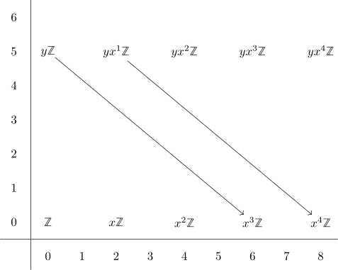
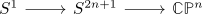
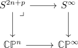

fiber sequence of the inclusion of CP^n into CP infinity
Proposition
The inclusion of $\mathbb{C}\mathbb{P}^n \rightarrow \mathbb{C}\mathbb{P}^{\infty}$ lives in a fiber sequence
Proof
a)
Let $\mathrm{Fib}$ be the fiber of the inclusion. Note that the skeleton inclusion $\mathbb{C}\mathbb{P}^n = \mathrm{Sk}_{2n+1}(\mathbb{C}\mathbb{P}^n) \rightarrow \mathbb{C}\mathbb{P}^{\infty}$ is $2n+1$ connected. Furthermore $\mathbb{C}\mathbb{P}^n$ is simply connected. Furthermore $\mathrm{cofib}$ of $\mathbb{C}\mathbb{P}^n \rightarrow \mathbb{C}\mathbb{P}^{\infty} \rightarrow \mathrm{cofib}$ has homology in degrees $2n+2$ and above.
So relative Hurewicz theorem tells us that the homotopy of the fiber
and it has to be zero before that.
Now consider the cohomological serre spectral sequence, here exemplarily for $n = 2$

Now the element $(6,0)$ entry must be killed, since $H^6(\mathbb{C}\mathbb{P}^2) = 0$. Hence the map must be an isomorphism.
furthermore multiplication of a multiplicative spectral sequence under different pages tells us that $y\cdot x^n \neq_{E_6} 0$ must be nonzero in the $E_6$ page, since we will show that its differential under the leibniz rule will be nonzero:
The leibniz rule says up to sign
so in particular $d_6(y \cdot x^n) \neq_{E_6} 0$ and each $d_5$ from the \(5\)-th row must be an isomorphism - hence up until the
Furthemore $\mathrm{fib}(-)$ can't have homology in degrees above $5$ since then $H^0(\mathbb{C}\mathbb{P}^{\infty}, H^m(\mathrm{fib}))$ can't be killed.
therefore nilpotent cohomology sphere is equivalent to a sphere shows that $\mathrm{fib}\simeq S^{2n+1}$ as desired
b)
Consider the fiber sequence

It is a principal $U(1)$ bundle (todo ) so by the classification theorem of principal g-bundles we get a pullback

for $EG \rightarrow BS^1 \simeq \mathbb{C}\mathbb{P}^{\infty}$
But $EG = S^{\infty} = *$ is contractible, so in particular the infinite sphere is contractible space,